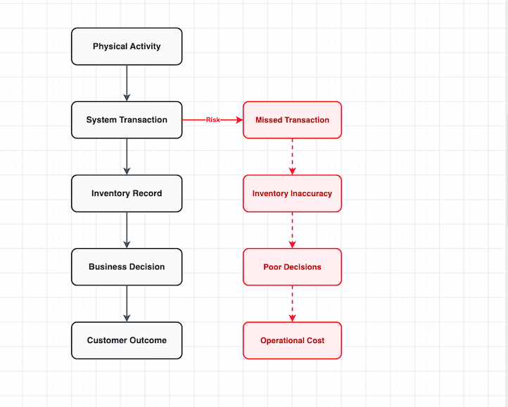

A single missed inventory transaction can trigger emergency shipments, inventory shortages, SLA risks, frustrated teams and unnecessary costs. Yet many organisations do not recognise the problem until the consequences begin to appear.
When people talk about cost, the first thing that usually comes to mind is money. Financial cost is important, but some of the most damaging costs in an operation are not always visible on a balance sheet.
They appear in the form of wasted time, operational stress, mistrust, duplicated effort, repetitive work and failed attempts at automation. These costs often sit in plain sight, yet many organisations underestimate their impact.
The Cost Nobody Measures
One of the most overlooked consequences of poor transaction discipline is the pressure it creates across an operation.
Supply chain processes are highly interconnected. Every activity depends on another activity being completed correctly and on time. When a transaction is missed, delayed or recorded incorrectly, the impact rarely stops with the individual responsible for the task.
Instead, the problem moves downstream and affects other teams that depend on that information. The result is often frustration, delays and unnecessary firefighting.
Over time, the issue becomes bigger than inventory accuracy. It becomes a trust problem. Once people stop trusting the system, they begin creating their own versions of reality through spreadsheets, emails, phone calls and manual checks. The organisation now spends more time verifying information than acting on it.
A Real Supply Chain Example
Consider a typical field service supply chain supporting ATM operations. A field engineer receives a replacement component from the central warehouse and installs it during a service call.
Once the component has been used, the engineer is expected to post the inventory consumption transaction in the system. That transaction serves an important purpose. It updates inventory records and signals that stock has been consumed.
This information can then be used by inventory planners and order management teams to determine whether replenishment is required.
But what happens when that transaction is not posted? The system continues to assume that the inventory is still available. Inventory planners continue working with inaccurate information. Order management teams continue making decisions based on inventory that no longer exists.
Everything appears normal until another service request arrives for the same component. At that point, the engineer informs the team that the part was actually consumed earlier but was never posted in the system. Suddenly, what appeared to be sufficient inventory becomes an urgent shortage.
How One Missed Transaction Becomes a Business Problem

What begins as a missed transaction quickly becomes a planning problem, a service problem and ultimately a business problem.
The Domino Effect
A single missed transaction can trigger a chain of consequences:
- Emergency replenishment orders
- Loss of confidence in inventory records
- Additional freight costs
- Potential SLA penalties
- Operational disruption
What began as a simple failure to complete a transaction now affects multiple parts of the operation. The financial cost is visible. The operational disruption is often much larger.
The Challenge for Automation
Many organisations are investing heavily in automation, analytics and AI driven decision support. However, technology can only work with the information available to it.
If inventory movements are not recorded consistently, the underlying data becomes unreliable. An automated replenishment process can only make decisions based on the information it receives. An AI model can only learn from the historical transactions available to it.
If the foundation is weak, the outputs will also be unreliable. Technology does not automatically fix poor processes. In many cases, it simply scales the problem faster.
Poor transaction discipline therefore creates a hidden barrier to digital transformation. Before an organisation can automate effectively, it must first ensure that its operational processes are being executed consistently and accurately.
The Lesson
Transaction discipline is often viewed as an administrative activity. In reality, it is a critical operational control.
Every transaction represents a connection between physical reality and the system used to manage it. Transaction discipline is not about data entry. It is about ensuring that the system reflects operational reality.
Every planning decision, replenishment decision and service commitment depends on that reality being accurate. When that connection breaks, inventory records become unreliable, planning becomes reactive and operational costs begin to rise.
The hidden cost of poor transaction discipline is not simply inaccurate data. It is the stress, disruption, mistrust, inefficiency and lost opportunities that follow.
In modern supply chains, operational excellence is not only about moving products. It is also about maintaining the integrity of the information that supports every decision.